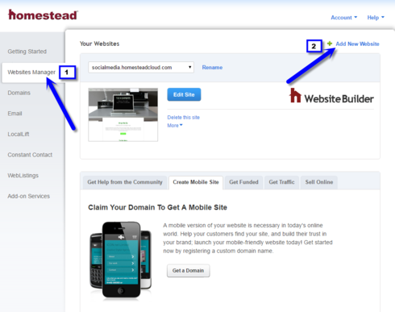

Troubleshooting DNS Error 1001 for Website Builder
Created by: Jesse Lito Jadulco 2/24/2024 (For Demo Purpose Only)
Homestead websites built using Website Builder can be secured using free SSL. Normal SSL installation can be done
by updating the A record to point to secure IP address which can be found in this link
However, there are cases where DNS Error 1001 appears after updating the A record.

The Engineering Team is aware of this problem and looking for a permanent resolution. As a workaround, kindly
follow the instructions below.
- Create a temporary website using Website Builder in Websites Manager page.
+To create a new Website Builder site:
- Log in to your Homestead account.
-
Click on the Websites Manager tab, then click on Add New Website.

- Please provide a unique name for the site. This is just a placeholder that your site will be built
under until you choose a domain name. Alternatively, you can choose to only use the site name, in
which case, your site will work with the .homesteadcloud.com URL.
- Click Add this Site. If the site name is already in use, you will be prompted to choose a different
name.
You do not enter a domain name in this space.
- If your name is available, you will be taken back to the Websites Manager page.
- If you are ready to move on, click Choose Design.
- Select any template for the temporary website. No need to publish.
- Associate the domain to the temporary website.
- Click the "Domains" link in the left navigation menu.
- Scroll down until you see your domain name and click Change Site Association.
- Choose the website you'd like your domain name to point to using the drop-down menu.
- Click Save to confirm the change.
It may take some time for this change to reflect.
Note: Please take note of the Homestead Cloud URL for the original website as the domain
will be
reassociated to it later.
- Republish the original website without the domain name using the Homestead Cloud URL only.
- After 5-15 minutes, re-associate the domain to the original website.
- Publish the website with the domain.
- Open homesteadssl.com by entering the domain name in the text box.
- Click Next.
Note: Kindly disregard if the last 2 digits of the IP address are different from the current
A record.
Homestead uses a secured IP range for SSL certificates.
- Advise customer for standard propagation time within 24 hours.
- Delete the temporary website unless instructed by customer not to do so.